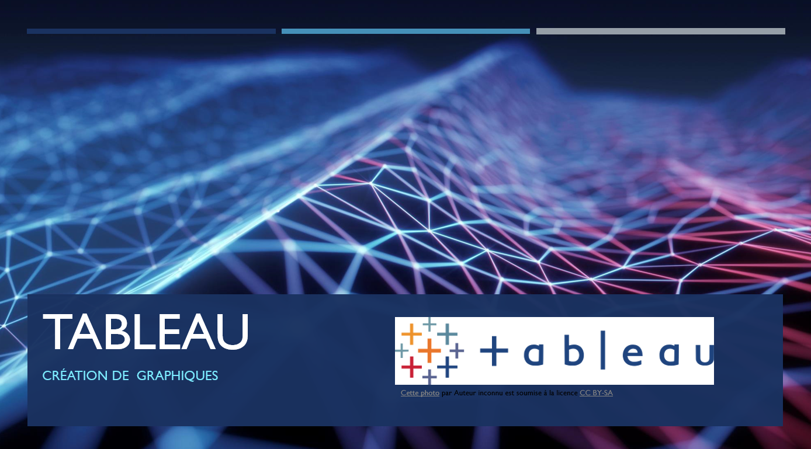

Stéphane JAILLY
Aeroworld, entreprise française et leader mondial dans l'industrie aéronautique, emploie des milliers de personnes à travers le monde. Ses principaux domaines d'expertise incluent la conception, le développement, la fabrication et la maintenance d'avions.
Afin d'optimiser la gestion de ses données (collecte, stockage, analyse) et d'améliorer ses missions (conception d'avions, performances opérationnelles, etc.), l'entreprise recrute un Chef de projet en analyse de données. Dans ce cadre, elle évaluera les candidats en analysant leurs portfolios et livrables attendus.
Réalisation de mon profil en intégrant mons parcours, mes compétences,... avec Tableau.
Le profil a été publié sur Tableau Public pour permettre son accès au public :
L'entreprise Aeroworld souhaite une démonstration des compétences de mises en place de veille métier et technologique. L'analyse d'un algorithme d'apprentissage supervisé a été réalisée à partir d'un projet déjà finalisé. L'objectif est d'évaluer l'intérêt de l'algorithme XGBoost par rapport à d'autres méthodes d'apprentissage supervisé sur ce jeu de données :
Aeroworld demandait la mise en avant des compétences de formation, d'accompagnement des équipes sur l'utilisation d'outils comme Tableau ou PowerBI. Une vidéo de formation d'une dizaine de minutes a été préparée pour expliquer comment créer des graphiques avec tableau en intégrant des personnalisations avancées des graphiques.

Pour accompagner la formation, un support a été réalisé pour accompagner les utilisateurs à créer des graphiques sur Tableau. Support de formation :